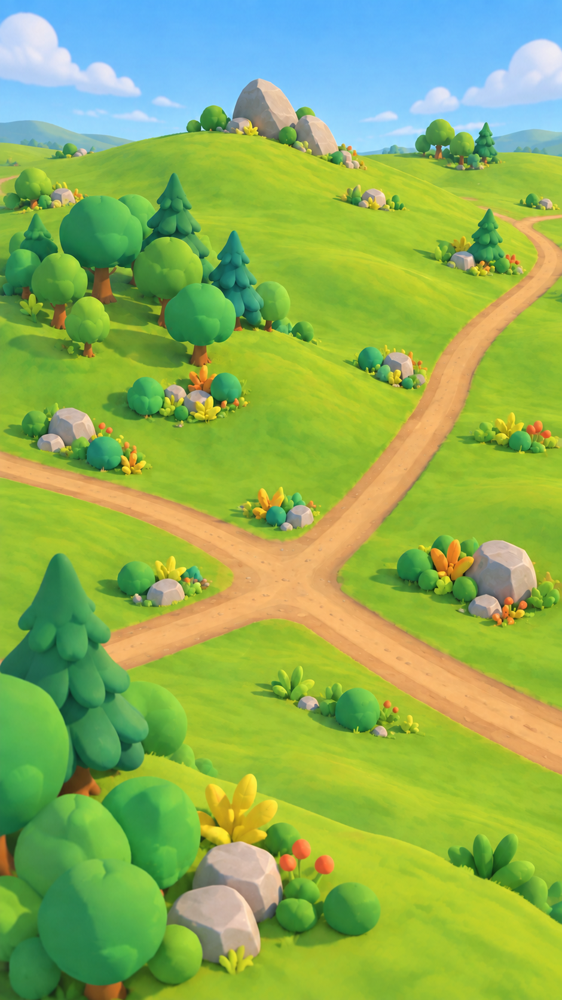

Meadow — Folded Downs
Overlapping green hills, clustered broadleaf trees and conifers, worn dirt crossings, and a modest buried-stone landmark.
Grass detail should live mainly in terrain color/texture. Existing tree, shrub and rock variants supply clusters; the large slabs can be simple custom meshes.